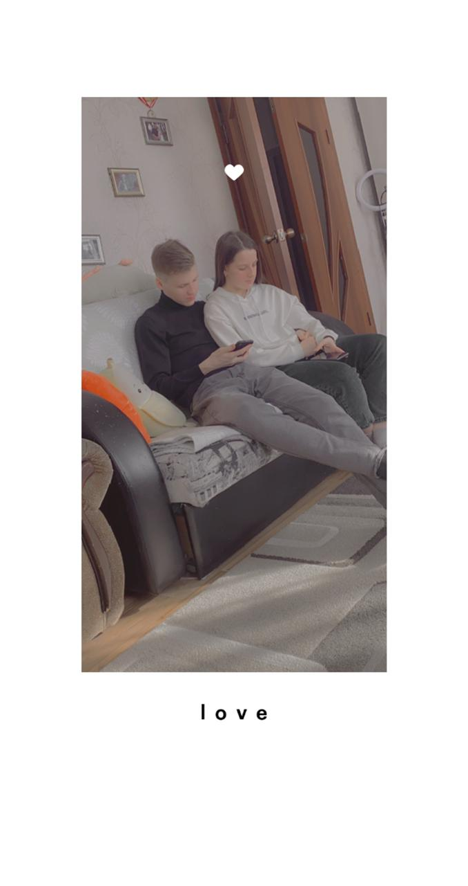
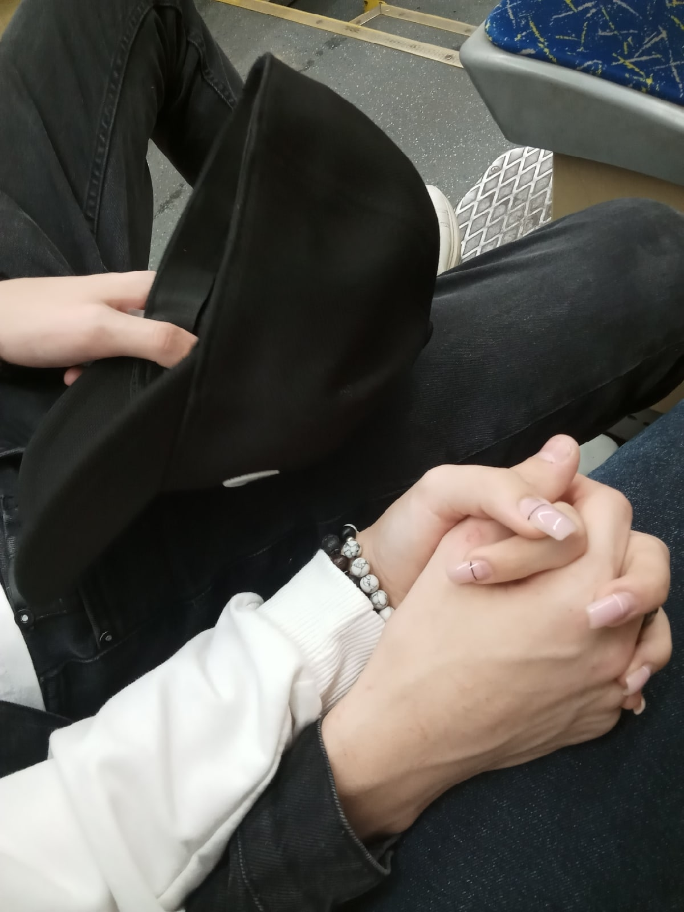

Это был год нашего становления. Мы узнали друг друга лучше, научились
понимать без слов и начали строить наши общие традиции. Первые поездки,
привыкание друг к другу, радость маленьких побед.
730
дня роста
∞
моментов понимания
1
прочный фундамент
Наши фото 2022
Моменты, которые сделали нас ближе
Веселые моменты

Приятные моменты

Важный разговор
Случайное счастье
Неожиданные фото
Наша история 2022
Моя любимая фотография
Та самая, которую я пересматривал сотни раз...
Из тысяч наших фотографий эта — самая особенная. Не потому что она самая красивая или профессиональная, а потому что в ней есть ты настоящая. Та, в которую я влюбился.
Вопрос: Какая моя любимая фотография?
Песня, которая стала нашей
Та мелодия, что звучала в подарках и в сердце...
Ты знаешь, я не очень люблю признаваться, но эта песня у меня в плейлисте на повторе. Каждый раз, когда она играет, я вспоминаю тебя. Подсказка была в подарках — ты точно помнишь.
Вопрос: Какая песня была связана с нами?
Тот самый подарок
Год отношений — и целая коробка счастья...
Я так старался собрать всё самое нужное и приятное. Хотел, чтобы в этой коробке поместилась вся моя забота. Кажется, у меня получилось, да?
Вопрос: Что находилось в подарке на год отношений тебе?
Мой первый шаг в мечту
Тот день, когда всё началось...
Я очень волновался. Это было моё первое серьёзное мероприятие, связанное со звуком. Ты верила в меня больше, чем я сам. Спасибо, что была рядом.
Вопрос: Дата когда произошло моё первое мероприятие связанное с звукачом?
Что я просил тебя снова и снова
Особенно перед сном...
Знаешь, некоторые вещи я могу повторять бесконечно. Не потому что ты забываешь, а потому что я правда за тебя волнуюсь. Даже если ты считаешь, что я слишком навязчивый.
Вопрос: Что я тебя всегда просил особенно перед сном?
Коды для доступа
Пройди все воспоминания 2022 года и ответь на вопросы правильно,
чтобы получить коды для дальнейшего прохождения.
?
Цифра для главного кода
Код для доступа к 2023 году
8
1
0
2
Используй этот код на главной странице рядом с карточкой 2023 года